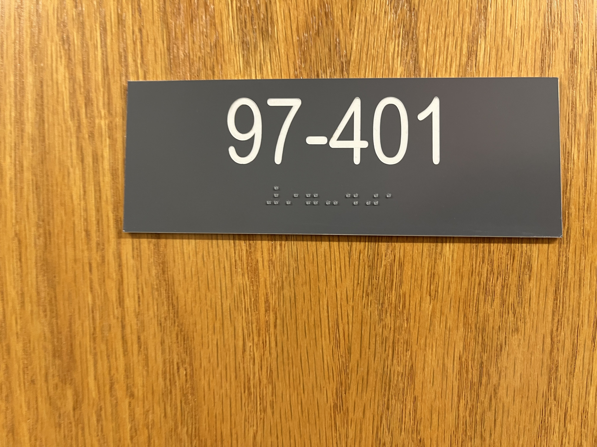
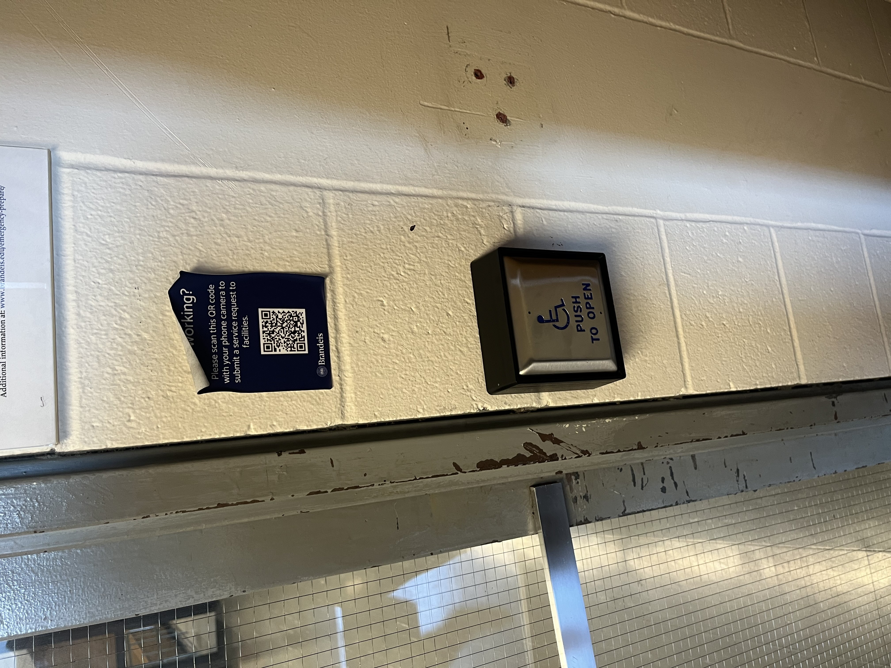
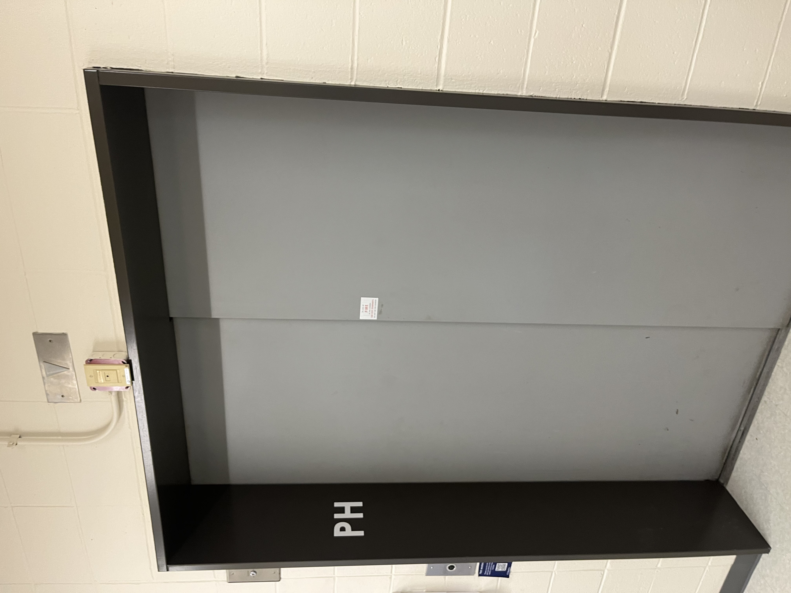
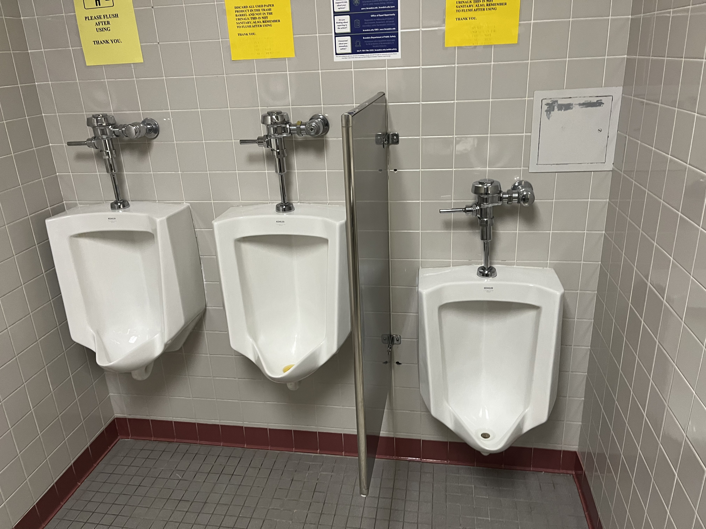
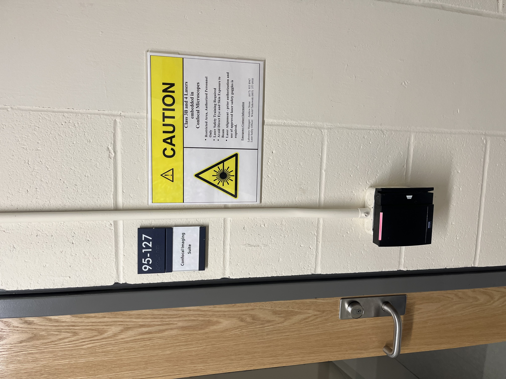
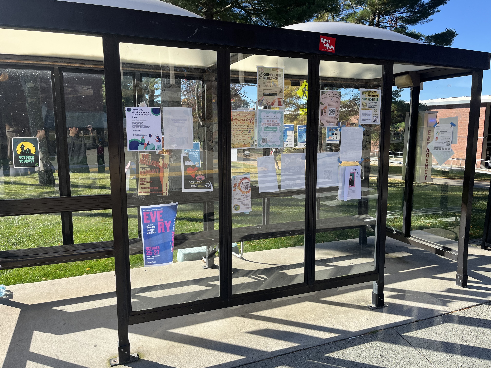
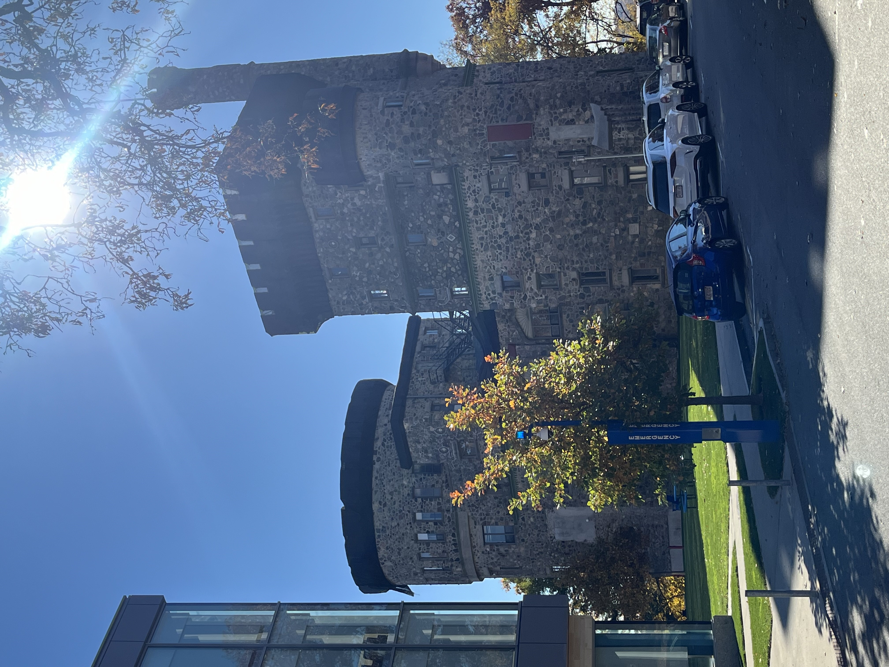
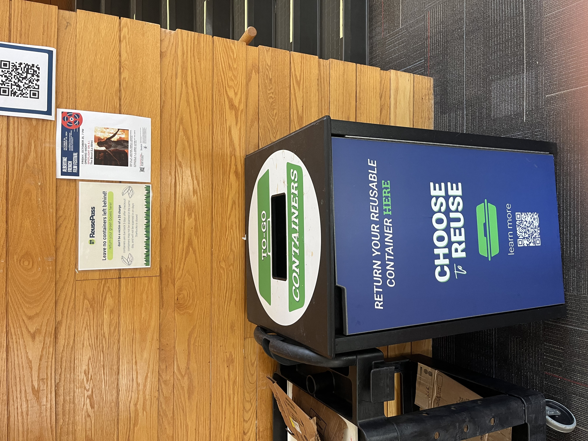
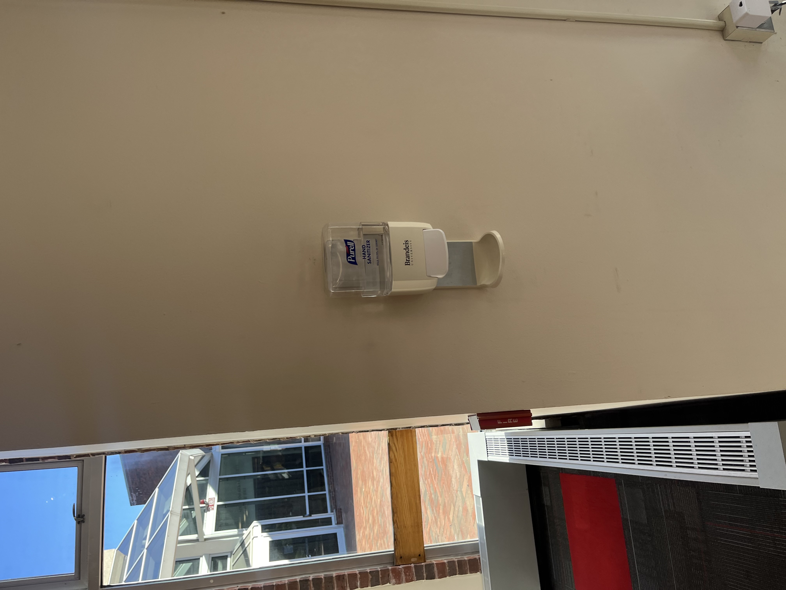

Scavenger Hunt
This assignment was a bit of preliminary reflection on how the environment around us was designed. My group, Dalion, Liam, and I, were tasked with noting examples of varying designs which were built with either helping specific groups of people and those that failed to accomodate for certain groups of people.
Design for Access
Evidence of design for navigation without one or more of the 5 senses
The door had braille text on the sign to help blind people figure out which room it was for. Therefore it is an example of design built for those without vision
Evidence of design for forms of assistance
By pushing this button, the door becomes powered and opens on its own. This allows people with crutches or wheelchairs to instead only need to hit a button.
Evidence of design for aging, broadly defined
This design is very friendly towards people who are aging because it helps remove the struggle of stairs. When people get old it is often harder to make the same physical movements for stairs, especially with bad knees. Making the elevator a great alternative as pushing a button saves the trouble of going up and down the stairs.
Evidence of design for young children
For younger boys it is very helpful to have a urinal which is low enough for them to use. Where the other alternative would be to use a stall or do some very sketchy aiming.
Evidence of design for wheeled mobile gear
The ramp provides a path for those with wheelchairs to go up and down floors without a lift or a lot of assistance since they can roll up or down the smooth surface.
Design against Access
Evidence of design with physical barriers
By requiring swipe access, the room is blocked by a physical barrier from most people. This is clearly a design to only allow for certain people to enter.
Evidence of design with a lack of information
The bus stop was created to give people a place to protect themselves from the elements while waiting for the bus. However, there is a lack of information for when the bus will come to pick them up or where it is going
Evidence of design with an absence of help

It provides a false sense of security to have the devices which promise to call for emergency help but in reality no one knows what they do. There is also black tape which covers the button to even trigger the response.
Design Priorities in the Built Environment
Evidence of design for historical specificity
Usen castle carries some historical significance and was built in 1928. It served as a dorm for Brandeis University until 2017.
Evidence of design for environmental sustainability
The reusability containers serve as a very good way to encourage environment sustainbility. The program involves having reusable containers which can be deposited at multiple locations on campus. This eliminates the need for using multiple disposable containers which produces a lot of waste.
Evidence of design for health and well-being
Hand sanitizers are very helpful for giving people an easily accessible way to clean their hands. Which has been a very important problem to solve ever since covid created a widespread pandemic.
Evidence of design for recreational use

The basketball hoop at massell is a fun recreational space for students to unwind.